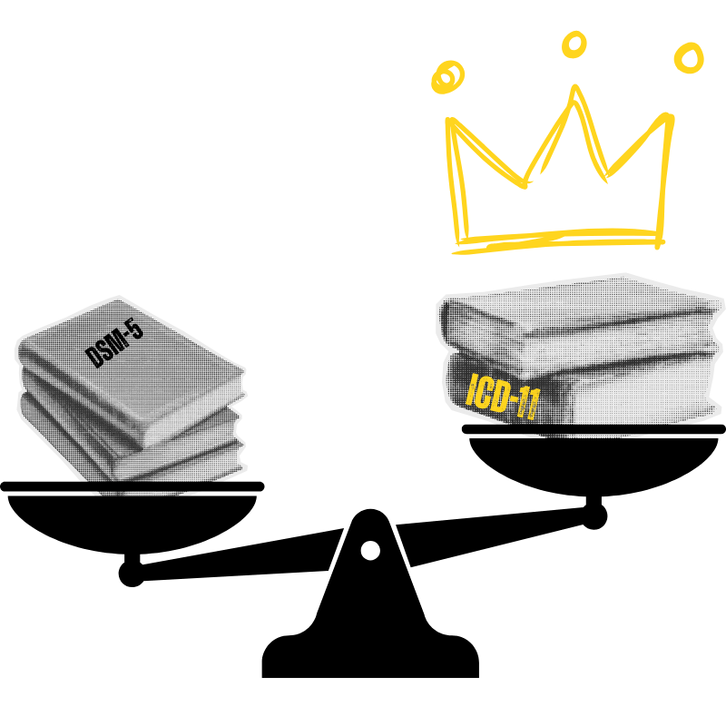

There's a particular irony in the fact that I'm the one writing this.
I've spent most of my life on the receiving end of these manuals — collecting diagnoses the way some people collect parking tickets. ADHD here. Generalized Anxiety there. Alcohol and substance use somewhere in the middle. Each one handed to me by someone who had presumably read the relevant pages with far more clinical composure than I ever could. I wasn't reading the DSM. The opposite had been true. For all my life, it had been effectively reading and interpreting me.
So the fact that I've now spent genuine time pulling apart two international diagnostic frameworks — comparing their structures, tracing their disagreements, reading the footnotes — is not something I would have predicted. But here we are. And being clinically overwhelmed by something for most of your life doesn't strip you of the right to eventually look at it clearly. If anything, it earns you one.
Reading my diagnoses used to feel like reading a Chinese horoscope about myself — half of it eerily accurate, the other half a confident swing and a miss. I'd catch myself trying to make the descriptions fit, convincing myself "yep, that must be me," even when it didn't register with me at all. Nothing explained the identity collapse, the chronic guilt, the emotional whiplash, or why recovery felt like something you performed.
Then I found Judith Herman's work — immense validation from start to finish. The experience was something like reading a lottery ticket number by number, growing more excited as each one matched. Except this lottery ticket offered no money. In a lot of ways, it offered something better: a framework for finally understanding yourself.
But validation and frustration arrived together. To read Herman — and van der Kolk, who was pushing the same case — is to realize how long this understanding existed before it reached you. And then to learn that the DSM rejected their proposals. Twice. That the people who named your experience most accurately spent decades being told by the official record that the evidence wasn't sufficient. Their frustration and mine turned out to rhyme.
What follows is what I found when I started pulling on that thread.
In Alberta and most of North America, the DSM-5 still governs official diagnosis. But the ICD-11 — the global standard — now recognizes C-PTSD as its own distinct condition. That shift matters more than it might sound. It means the problem was never you, your symptoms, or your story. It's that the system took decades to catch up to what survivors already knew.

Both manuals exist to standardize diagnosis. When it comes to complex trauma, they arrived at very different conclusions.
How they diverged around trauma:
The global system caught up to what trauma clinicians and survivors had understood for decades. The North American system is still working on it.
The DSM isn't the villain here. It does exactly what it was designed to do: describe symptoms clearly enough that clinicians, researchers, and systems are all working from the same page. In that respect, it earns its name — it is a diagnostic manual. A very good one, for what it was built to handle.
The problem isn't that it's broken. The problem is that people aren't machines. If you bring your car to a mechanic after blowing the same tire on the same curb for the second time this year, they'll replace the tire, maybe a tie rod, and send you on your way. Your mechanic isn't handing you a pamphlet for driving classes. Nor are they asking why you keep clipping that curb. Nobody looks at the pattern. The part got fixed. The reason it keeps failing didn't come up.
The DSM correctly identifies the part that failed.
It was never designed to ask why it keeps failing.
That's the limitation for trauma survivors. Symptoms can be catalogued — but the story that produced them often goes unspoken. Anxiety, depression, substance use, emotional volatility, attention problems — all can be "correctly" diagnosed using DSM criteria while the actual driver — chronic relational trauma — goes completely unaddressed. You leave with an accurate label for the symptom and no map to what's underneath it.
This isn't an indictment. It's a description of a design constraint. For most mental health challenges, DSM-style symptom mapping works well. But for developmental trauma — the kind that shapes identity, attachment, and how the nervous system calibrates to the world — a symptom checklist will never tell the full story. It can't. That's not what it was built for.
That's what makes the ICD-11's recognition of C-PTSD significant. Not because the DSM got something wrong, but because trauma survivors finally have a diagnostic framework that that better reflects what is happening and why it started happening in the first place. That distinction is the difference between managing symptoms and actually treating the wound.
In 2013, the DSM-5 rejected Developmental Trauma Disorder for the second time — effectively taking its closest iteration of C-PTSD and killing it on the runway. But something else happened in that same revision cycle that I haven't been able to stop thinking about.
That same year, DSM-5 added a fourth symptom cluster to its otherwise classical definition of PTSD: negative alterations in cognition and mood. The original three clusters — re-experiencing, avoidance, and hyperarousal — had defined PTSD since its introduction. The fourth was new. And it covers territory that should sound familiar by now: persistent negative beliefs about oneself, distorted blame, diminished interest, feelings of detachment, inability to experience positive emotions.
In the same year they rejected the diagnosis that would have named complex trauma directly, they quietly absorbed a portion of its symptom domain into the existing PTSD framework.
This is my opinion — I want to be clear about that. But it's hard not to read Criterion D as a half-measure. A way of acknowledging that the classical PTSD definition wasn't capturing the full picture, without going the full distance of recognizing C-PTSD as its own condition. The identity wounds, the relational instability, the chronic dysregulation — those still don't have a home in the DSM. But the mood and cognition cluster gestures toward them.
Whether that was a deliberate compromise, a limitation of the evidence threshold, or simply the way large institutional frameworks evolve — I can't say. What I can say is that the timing is worth noting. They knew something was missing. The fourth cluster is what they did about it instead.
// To Be Clear About My Position
I'm not arguing that the ICD gets everything right and the DSM gets everything wrong. That's not the point. My question is narrower: why hasn't the DSM picked up C-PTSD?
The most common explanation is symptom overlap — and that overlap is real. C-PTSD shares its three original clusters with PTSD: re-experiencing, avoidance, and hyperarousal. But C-PTSD also requires three additional clusters on top of those — affect dysregulation, negative self-concept, and relational disturbances — and all six must be present for a C-PTSD diagnosis. That's not overlap. That's a higher and more specific threshold. Of course the conditions share symptoms. One contains the other, plus more.
And here's where I land: if the DSM wants to keep them separated, fine. That's a defensible position. But if that's the approach, then treating the multiple discrete diagnoses that result has to be connected, coordinated, and focused on root cause. Otherwise the symptoms will ruthlessly persist — because you're managing the outputs of an injury that nobody is naming or treating directly.
Same person, multiple diagnoses. The DSM fragments trauma; the ICD-11 integrates it.
Same phenomenon. Two frameworks. Only one gives complex trauma its own home.
Look at the left side of that diagram long enough and you start to feel it — the weight of being handed five different explanations for the same person. What the DSM's fragmented approach does, beyond the clinical inconvenience, is leave the door wide open for a particular and crushing conclusion: I am broken in multiple, compounding ways. That I have a defective brain. That the sum of all these labels is simply what I am.
The C-PTSD lens moves the frame entirely. It doesn't look at the same picture and see malfunction. It sees adaptation. A nervous system that learned to survive the conditions it was given. The symptoms aren't evidence that something went wrong with you — they're evidence that something was done to you, and that you found a way to keep going anyway. Those are two completely different animals. And which one you're handed matters more than most people realize.
Read the DSM (North America) PTSD criteria here.
Read the ICD-11 (WHO) PTSD and C-PTSD overview here.
Note on symptom clusters: If you've read the DSM criteria closely, you'll notice it runs from A through H — which makes it look like far more than four categories. That confused me too. Only B, C, D, and E are actual symptom clusters. The others — A, F, G, H — cover exposure criteria, duration, functional impairment, and exclusions. So: four clusters. Eight letters. Classic DSM energy.
A diagnosis can be genuinely useful — it gives language to what you're experiencing and helps clinicians coordinate care. But it's still a tool. Not a verdict. Not an identity. And for a lot of people with complex trauma histories, it's a tool that's been consistently reaching for the wrong shelf.
Most survivors with chronic trauma don't get one diagnosis. They collect them — depression, anxiety, substance use, personality disorders — each one describing a slice of the picture without any of them naming what's underneath. You end up with a folder full of explanations and still no map to the thing that's actually driving all of it.
Different offices. Different labels. Same story underneath.
For many survivors, that story finally starts to make sense when viewed through the lens of Complex PTSD (ICD-11). Not because it replaces every other diagnosis — but because it explains why so many symptoms cluster together in the same person, and why treatment keeps falling short when the trauma underneath goes unaddressed.
That's not how it works. You don't need a perfectly worded diagnosis to begin healing. If your nervous system has been shaped by long-term trauma, you are allowed to start recovering from it right now — whether or not anyone has written "C-PTSD" in your file. The work doesn't wait for the paperwork.
Understanding where your experience sits in relation to DSM-5 and ICD-11 isn't an academic exercise. It changes what you ask for, what you expect from care, and how you talk about what's actually happened to you.
Having the right language doesn't fix anything on its own. But it gets you into the right conversation — and the right conversation is where things start to shift.
Before the practical bit — one thing worth saying clearly: many clinicians are just as frustrated by these gaps as you are. They're working inside systems that constrain their time, their training, and what they're able to formally diagnose — even when they can see complex trauma plainly in front of them. This page isn't an indictment of individual therapists. It's about giving you — and the people trying to help you — better language to work with the reality you're both already navigating.
// a note on PTSD vs. C-PTSD
If your current diagnosis is PTSD rather than C-PTSD, the treatment approaches that actually help — EMDR, TF-CBT, DBT, IFS, somatic work, nervous system regulation, attachment-focused therapy — overlap heavily regardless of which label is in your file. The C-PTSD framework here is meant to give you clarity and language, not a reason to stall until someone updates your chart. Recovery doesn't require a specific diagnostic code. It requires showing up.
If you were hoping for ammo to roast your doctor with a "Checkmate, DSM" speech — this ain't that.
This is about building a bridge, not burning one to the ground.
The system is imperfect. The people inside it, mostly, are trying. The better your language, the better your odds of finding the ones who can actually help.
Follow the next step in order, or branch out into related topics.
These references trace how the DSM-5 and ICD-11 diverged in defining trauma-related disorders, why C-PTSD was validated through ICD-11, and how clinicians and advocates are bridging the diagnostic gap for survivors of chronic trauma.